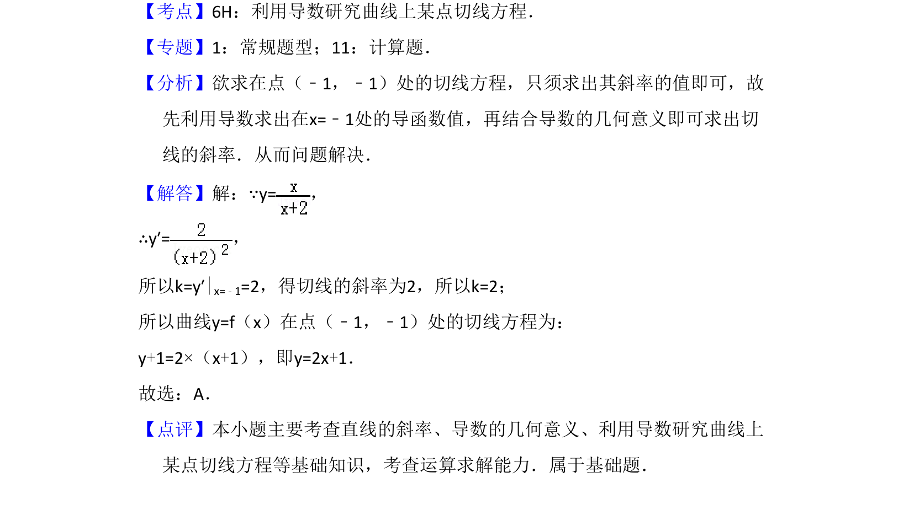

考点：导数几何意义 切线方程 斜率计算
求曲线在给定点的切线方程，考查导数几何意义和切线求法。

📄 原 PDF 第 2 页：
素材/真题/吉林/2008-2024·（吉林）数学高考真题/2010年高考数学试卷（理）（新课标）（解析卷）.pdf
3．（5分）曲线y=在点（﹣1，﹣1）处的切线方程为（ ） A．y=2x+1 B．y=2x﹣1 C．y=﹣2x﹣3 D．y=﹣2x﹣2
【考点】6H：利用导数研究曲线上某点切线方程．菁优网版权所有 【专题】1：常规题型；11：计算题． 【分析】欲求在点（﹣1，﹣1）处的切线方程，只须求出其斜率的值即可，故 先利用导数求出在x=﹣1处的导函数值，再结合导数的几何意义即可求出切 线的斜率．从而问题解决． 【解答】解：∵y=， ∴y′=， 所以k=y′|x=﹣1=2，得切线的斜率为2，所以k=2； 所以曲线y=f（x）在点（﹣1，﹣1）处的切线方程为： y+1=2×（x+1），即y=2x+1． 故选：A． 【点评】本小题主要考查直线的斜率、导数的几何意义、利用导数研究曲线上 某点切线方程等基础知识，考查运算求解能力．属于基础题．